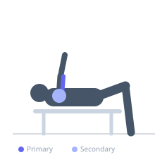
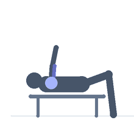

Exercise guide / Weighted Bench Dips
Weighted Bench Dips
Weighted bench dips are performed the same as bodyweight bench dips but with weight plates placed across the lap to increase the loading. The hands are on a bench behind the body, the feet are on a surface in front, and the hips dip down between. Adding weight plates allows the exercise to progress beyond bodyweight limitations. The exercise primarily works the triceps with significant anterior deltoid involvement.
Primary muscles
triceps long head
triceps lateral head
triceps medial head
Secondary muscles
deltoid anterior
Equipment
Flat Bench
Weight Plates


Starting position
- Place hands behind on a flat bench, feet on another elevated surface in front. Place weight plates across the lap. Begin with arms extended.
Setup
- Have a training partner place or remove the plates safely. The feet should be elevated to increase the range of motion and tricep demand.
Steps
- Step 1: Begin with arms extended, weight across the lap.
- Step 2: Lower the hips downward by bending the elbows to 90 degrees.
- Step 3: Push through the hands to extend the elbows and return to the starting position.
- Step 4: Keep the torso close to the bench edge throughout.
Coaching cues
- Keep the torso upright and close to the bench
- Elbows bend straight back — not flared
- Squeeze at the top
Breathing
- Inhale on the descent, exhale on the press.
Range of motion
- Upper arms to parallel with the floor at the bottom.
Tempo
- 2-0-2-0
Common mistakes
- Letting the hips drift too far from the bench (strains the shoulder)
- Insufficient depth
Safety
- The anterior shoulder is under significant stress — avoid very heavy loading which can damage the shoulder capsule
- Feet elevation should allow 90-degree elbow flexion at the bottom
Training
- hypertrophy: 8–15 reps
- hypertrophy: 3–4 sets
- Rest: {'hypertrophy': 90}